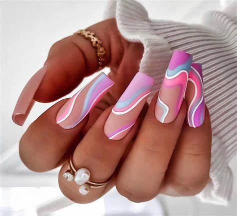
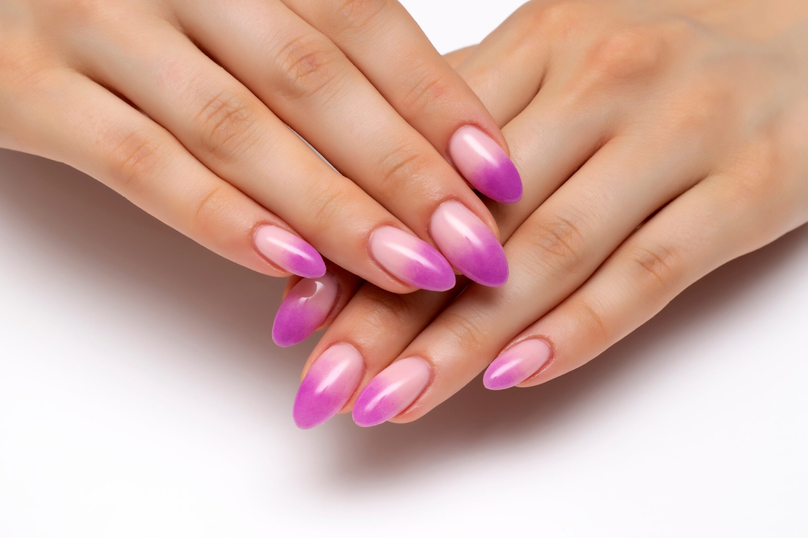
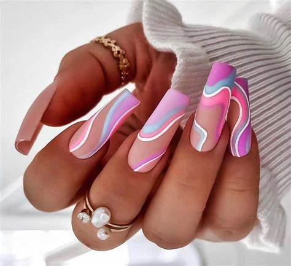
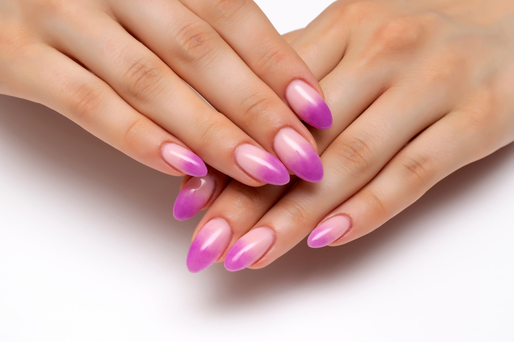
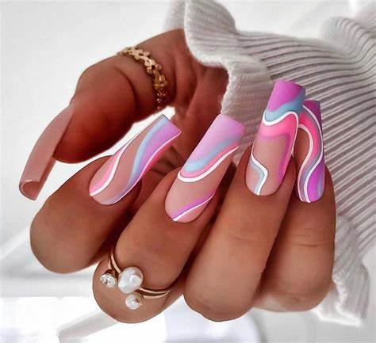
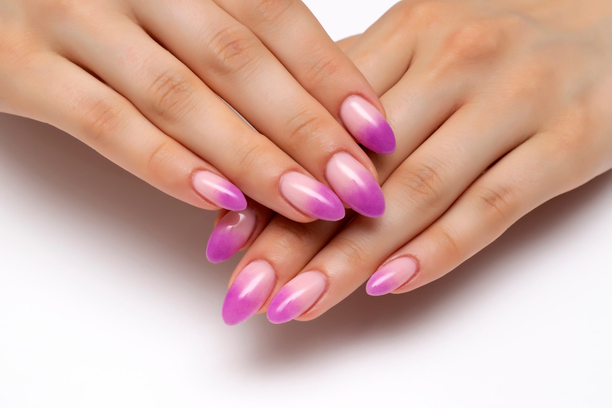

Galería de Diseños
 



Tu asesora inteligente para un estilo de uñas perfecto
MauñAl es una app y sitio web impulsado por inteligencia artificial que te ayuda a encontrar el diseño de manicure ideal según tus gustos, estilo y ocasión. Además, conecta a clientes con manicuristas calificados cerca de ellos.


Elige entre una cuota fija mensual o pagar un porcentaje de tus ingresos. MauñAl se adapta a ti para ayudarte a crecer sin presiones.